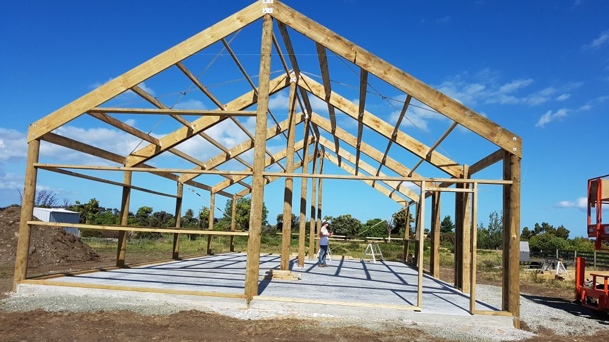
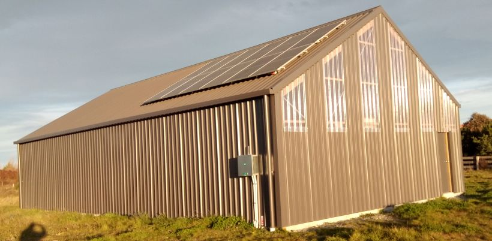
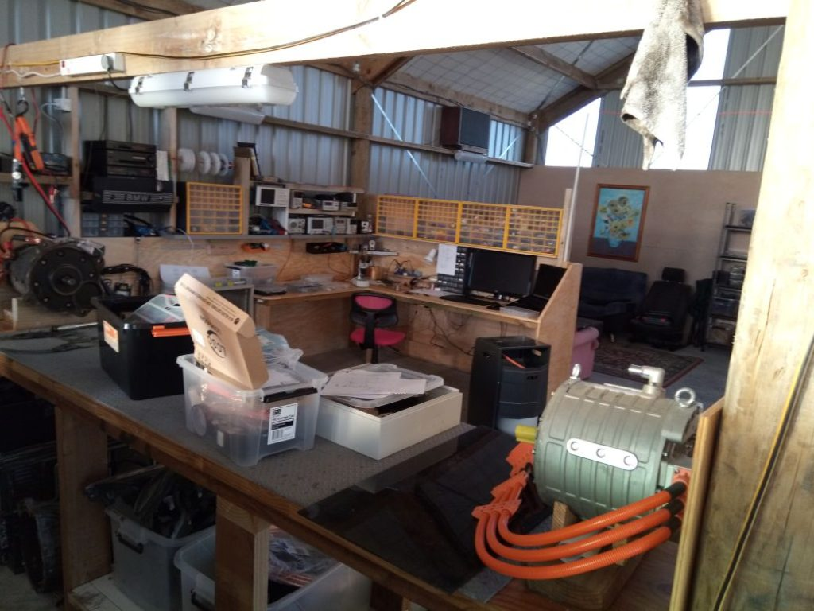

Well I Finally completed the move of the electronics lab and workshop in to the new custom built work shop adjacent to the house. The new workshop is 144sqM so about 10 times the size of the old room I was using in the house and has special areas for a full electronics lab, a high voltage work area and separate bench for mechanical work.
The unfortunate thing is we are still in the middle of Winter in New Zealand and with no heating in the new work shop some days it is a bit cold to work there. I still have a heated room in the house for those special days 🙂 Luckily most days in Winter start out a bit cold but warm up nicely by about 10AM so it shouldn’t be an issue. Also we are now very much carbon neutral with the installation of solar panels which provide

The inevitable waiting for the workshop to be built and the usual massive workload caused by the wine industry vintage have put on hold several projects which I will now have to restart by order of urgency.


So there is most of it in its low rez glory.. Not shown is the cunning alarm system which would require mission impossible levels of technology to get in!